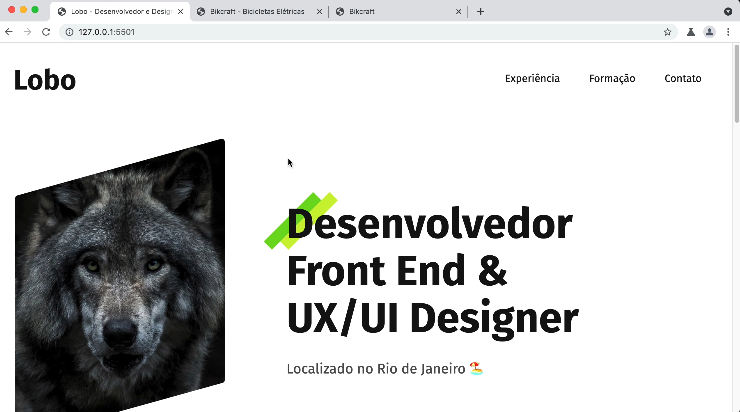
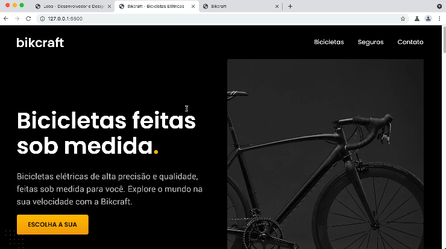

O curso é principalmente focado em quem busca se tornar um desenvolvedor Front-End. São abordado temas como HTML, tags, acessibilidade, CSS, Grid Layout, Flexbox, Media Queries, responsividade, etc.
Não existem pré-requisitos, o curso é para todos aqueles que têm interesse em aprender e vai começar do zero até o primeiro projeto prático.
Será utilizado como editor de texto o programa Microsoft Visual Studio Code.
Download VS CodeOs projetos criados serão o Meu Portifólio (portifólio pessoal básico) e o Bikcraft (loja de venda de bicicletas). Ambos os projetos também são abordados no curso de UX/UI.

Esse vai ser um projeto mais simples.

Esse projeto vai ser mais complexo, com várias telas diferentes e componentes visuais interessantes.
HTML, CSS, JavaScript, Editor de Código e Browser.
Tags, Estrutura HTML, Editor, CSS Básico, Box Model, Display, Imagens.
Margin, Grid, Flexbox, Position.
Semântica e Acessibilidade, Pontos de Referência, Listas, Navegação.
Unidades, Tipografia, Backgrounds, Pseudo-classes e Elementos.
Media Queries, Grid, Object Fit e Max Width.
Linhas de comando, Git e Automações.
Formulários, Especificidade, Propriedades Customizadas e CSS Utilitário.
Criar o projeto Bikcraft do zero.
Tipos de dados, manipular o DOM, Objetos e outros.
Link ativo, Mostrar/esconder conteúdo, Galeria de imagens, Plugins e outros.
Domínio, Hospedagem, Servidor, Formulário.
Sim, o curso vai partir do zero mas também possui detalhes que podem agregar até para quem já tem experiência na área.
Não. O foco do curso é mostrar os conceitos e demonstrar na prática de modo que a gente consiga entender os motivos para que algo seja feito, como e quando colocar em prática.
O curso vai abordar um pouco dos conceitos de UX/UI, porém o curso mais adequado para esse assunto é outro, onde da pra ver de forma bem mais aprofundada.
Da mesma forma que o desing, serão utilizados alguns recursos de JavaScript nos projetos, mas o curso completo mesmo é separado.